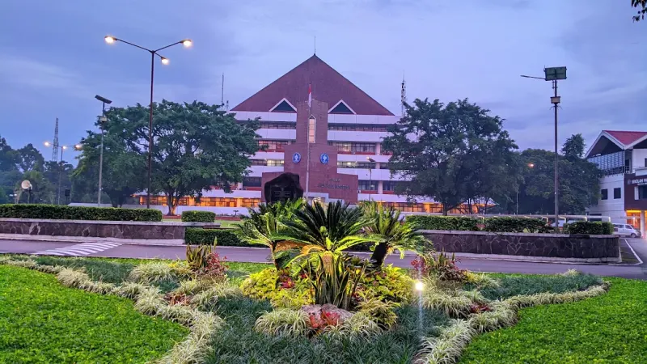
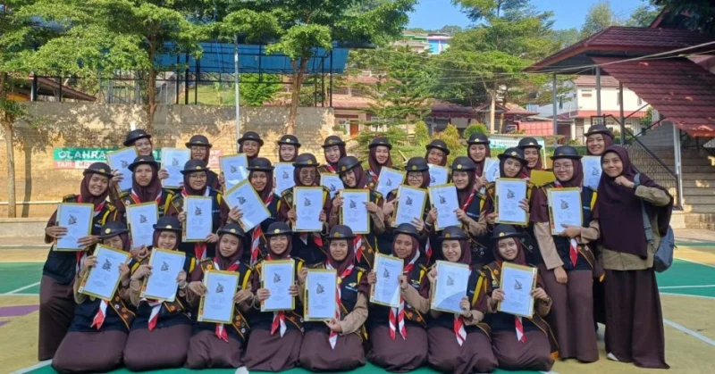
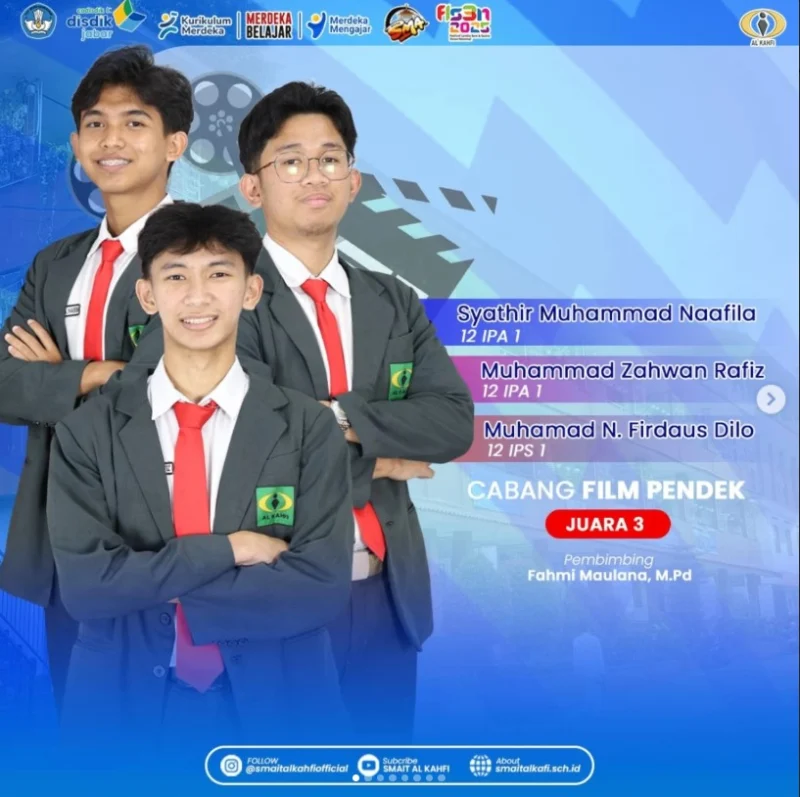
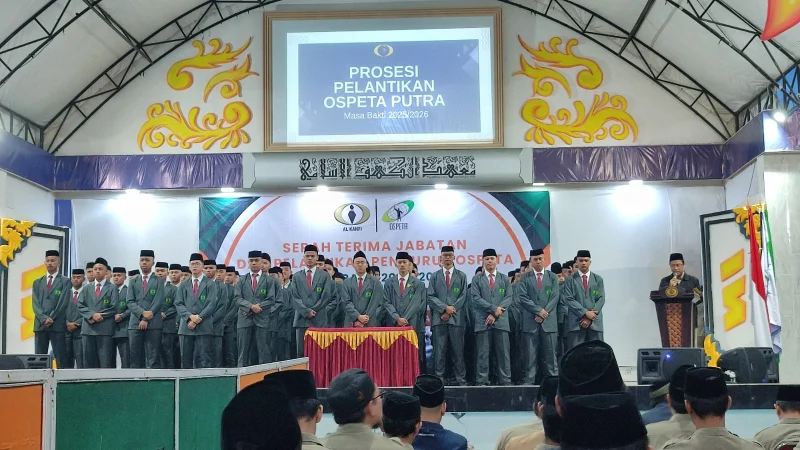

SMA Islam Terpadu Al Kahfi
Berilmu.
Berakhlak.
Tumbuh bersama dalam pendidikan dan kehidupan pesantren, menjadi pribadi shalih, muslih, dan qudwah.

Shalih
Membangun pribadi berakhlak.
Muslih
Menebar manfaat bagi sesama.
Qudwah
Tumbuh menjadi teladan.
Pendidikan yang utuh.
Bekal untuk kehidupan.
SMAIT Al Kahfi merupakan bagian dari Pesantren Terpadu Al Kahfi di bawah naungan Yayasan Pedesaan Nusantara.
Kurikulum pendidikan nasional berpadu dengan pendidikan pesantren. Ilmu, akhlak, dan potensi santri tumbuh dalam satu lingkungan belajar.
Profil sekolahKurikulum nasional & pesantrenPembinaan karakterCigombong, Bogor
Setiap potensi punya ruang.
Belajar di kelas, berkarya, dan menjalani kehidupan pesantren. Temukan program yang mendampingi perjalanan santri.

Kurikulum terpadu
Ilmu pengetahuan dan pendidikan pesantren sebagai bekal masa depan.

Kehidupan santri
Pendampingan karakter, konseling, dan kegiatan kepramukaan.

Minat & bakat
Ruang berekspresi melalui sains, olahraga, seni, dan teknologi.

Belajar memimpin
Belajar berorganisasi dan berkontribusi bersama OSPETA.
Tumbuh bersama.
Setiap hari.
Pendidikan juga hadir dalam kebiasaan, pertemanan, dan kesempatan mencoba hal baru.
Kehidupan santriPembinaan & pendampingan
Kedisiplinan, bimbingan konseling, serta kegiatan bersama membantu santri mengenal diri dan belajar bertanggung jawab.
Pelajari programKarya, minat & prestasi
Sains, riset, seni, olahraga, dan multimedia memberi ruang bagi santri untuk mengembangkan kemampuan.
Pelajari programOrganisasi & kepemimpinan
OSPETA menjadi tempat belajar menyusun kegiatan, bekerja sama, dan memberi manfaat bagi lingkungan pesantren.
Pelajari programKabar dari Al Kahfi.
Semua beritaKontingen Al Kahfi Raih Beragam Prestasi di Perkemahan GAGAK XVI Antar Pondok Pesantren Se-Indonesia
Baca beritaKontingen Pencak Silat Al Kahfi Raih Satu Emas dan Tiga Perak di Jakarta Arisaka Championship 2025
Baca beritaBeragam perjalanan.
Satu rumah, Al Kahfi.
Temukan jejak lulusan dan sambung kembali silaturrahim bersama KASAHF.
Jelajahi alumni430Profil alumni dipublikasikan
82Perguruan tinggi dalam data
Berdasarkan data publik alumni tahun 2025 dan 2026.
Mari mengenal Al Kahfi lebih dekat.
Informasi sekolah, kebutuhan santri, dan ruang untuk berkolaborasi.